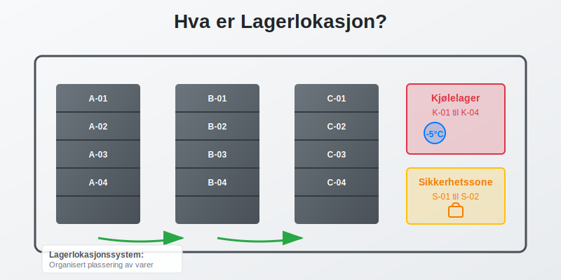
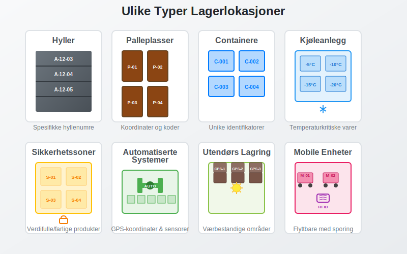
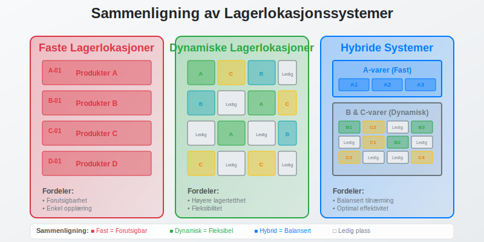
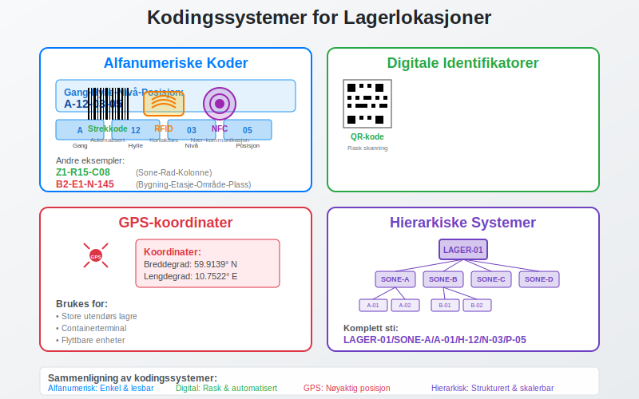
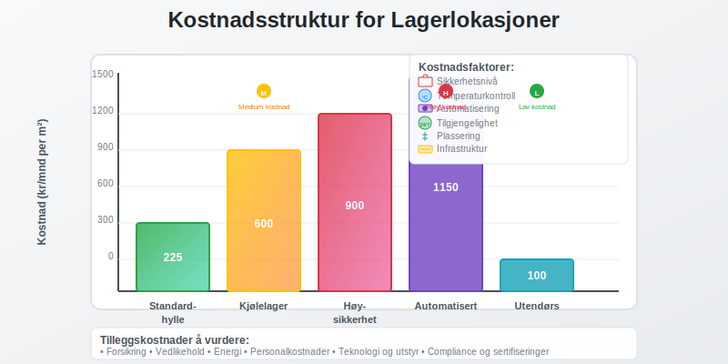
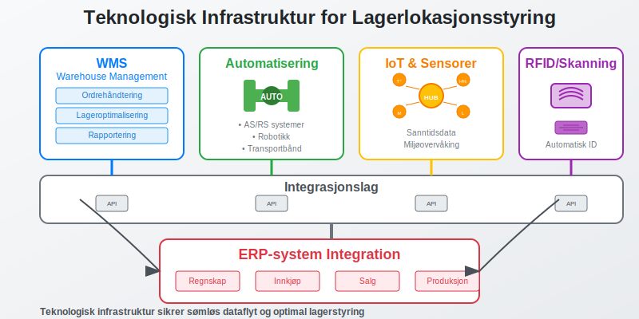
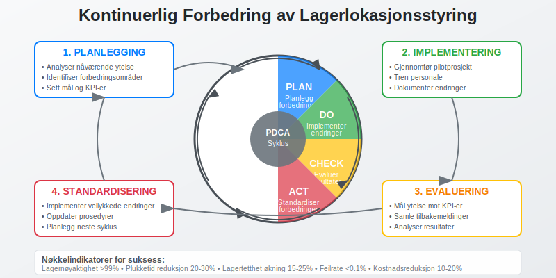
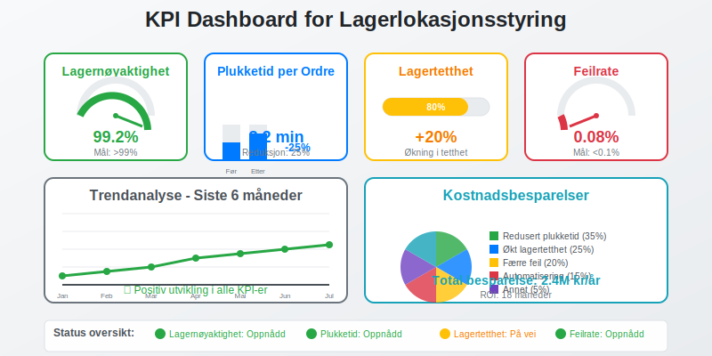
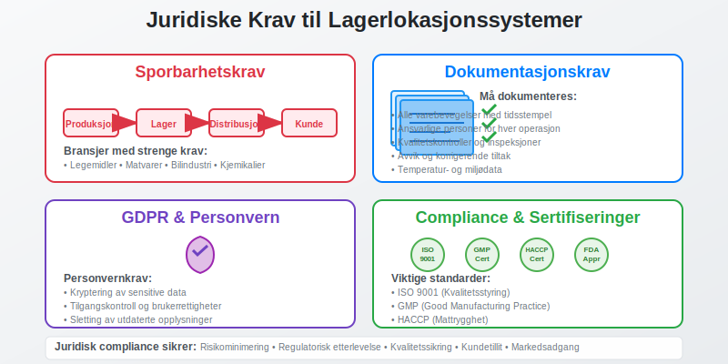
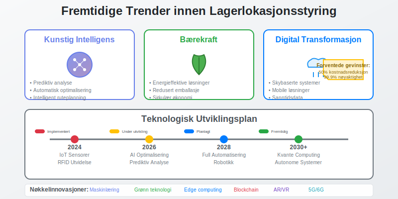

Lagerlokasjon er den spesifikke plasseringen av varer og produkter i et lager eller varelager. Dette omfatter både den fysiske posisjonen og den digitale registreringen av hvor hver vare befinner seg. Effektiv lagerlokasjonsstyring er avgjørende for optimal lagerdrift, nøyaktig regnskapsføring og kostnadseffektiv drift.

Definisjon av Lagerlokasjon
En lagerlokasjon er et unikt identifisert område eller plass i et lager hvor spesifikke varer oppbevares. Dette kan være:
- Hyller med spesifikke hyllenumre og posisjoner
- Palleplasser med koordinater eller koder
- Containere eller bokser med unike identifikatorer
- Køleanlegg eller spesialområder for temperaturkritiske varer
- Sikkerhetssoner for verdifulle eller farlige produkter
Hver lagerlokasjon har typisk en unik kode eller adresse som gjør det mulig å identifisere og spore varer gjennom hele lagerprosessen.

Typer Lagerlokasjonssystemer
Faste Lagerlokasjoner
I et fast lagerlokasjonssystem har hver vare sin faste plass i lageret:
- Forutsigbarhet - samme vare finnes alltid på samme sted
- Enkel opplæring av personale
- Redusert risiko for feilplassering
- Mindre fleksibilitet ved endringer i sortiment
Dynamiske Lagerlokasjoner
Dynamisk lagerlokasjon innebærer at varer kan plasseres på ledige plasser:
- Høyere lagertetthet og bedre plassaustnyttelse
- Fleksibilitet ved sesongvariasjoner
- Krever avanserte ERP-systemer for sporing
- Kompleks administrasjon og høyere teknologikrav
Hybride Systemer
Kombinerer elementer fra både faste og dynamiske systemer:
- A-varer (høy omsetning) får faste lokasjoner
- B- og C-varer bruker dynamisk plassering
- Balanserer effektivitet med fleksibilitet

Lagerlokasjonskoding
Alfanumeriske Koder
Den vanligste metoden for å identifisere lagerlokasjoner:
- Gang-Hylle-Nivå-Posisjon (f.eks. A-12-03-05)
- Sone-Rad-Kolonne (f.eks. Z1-R15-C08)
- Bygning-Etasje-Område-Plass (f.eks. B2-E1-N-145)
QR-koder og Strekkoder
Moderne lagre bruker ofte digitale identifikatorer:
- QR-koder for rask skanning med mobilenheter
- Strekkoder for automatisert registrering
- RFID-tags for kontaktløs identifikasjon
- NFC-teknologi for nærkommunikasjon
GPS-koordinater
For store utendørs lagre eller containerterminal:
- Nøyaktig posisjonering med GPS-koordinater
- Integrering med navigasjonssystemer
- Automatisk sporing av flyttbare enheter

Regnskapsmessige Aspekter
Lagerverdi og Lokasjon
Lagerlokasjon påvirker flere regnskapsmessige forhold:
- Lagerverdi må kunne spores til spesifikke lokasjoner
- Lagertelling krever nøyaktig lokasjonsinformasjon
- Avskrivning av lagerutstyr og -systemer
- Forsikringsverdi basert på lagerlokasjon og sikkerhetsnivå
Internkontroll og Revisjon
Effektiv lagerlokasjonsstyring støtter internkontroll:
- Sporbarhet av alle varebevegelser
- Ansvarsfordeling mellom ulike lagerområder
- Dokumentasjon av lageroperasjoner
- Revisjonssti for alle transaksjoner
Kostnadsallokering
Ulike lagerlokasjoner kan ha forskjellige kostnader:
| Lokasjontype | Lagerkostnad per m² | Sikkerhetsnivå | Tilgjengelighet |
|---|---|---|---|
| Standardhylle | 150-300 kr/mnd | Lav | Høy |
| Kjølelager | 400-800 kr/mnd | Medium | Medium |
| Høysikkerhet | 600-1200 kr/mnd | Høy | Lav |
| Automatisert | 800-1500 kr/mnd | Medium | Høy |
| Utendørs | 50-150 kr/mnd | Lav | Variabel |

Teknologi og Lagerlokasjon
Lagerstyringssystemer (WMS)
Warehouse Management Systems integrerer lagerlokasjon med:
- Ordrehåndtering og plukkeoptimalisering
- Lageroptimalisering og plassutnyttelse
- Rapportering og analyse av lagerytelse
- Integrering med regnskapssystemer
Automatisering
Moderne lagerteknologi inkluderer:
- Automatiske lagersystemer (AS/RS)
- Robotikk for plukking og pakking
- Transportbånd og sorteringssystemer
- Droner for lagertelling og overvåking
IoT og Sensorer
Internet of Things gir sanntidsdata om:
- Temperatur og fuktighet i ulike soner
- Bevegelsesdeteksjon og sikkerhet
- Lagernivåer og automatisk påfyll
- Utstyrsstatus og vedlikeholdsbehov

Beste Praksis for Lagerlokasjonsstyring
Planlegging og Design
- Analyser varestrøm og plasser høyomsetningsvarer strategisk
- Optimaliser gangveier for effektiv plukking
- Planlegg for fremtidig vekst og endringer
- Sikre tilstrekkelig sikkerhet og brannsikring
Implementering
- Tren personale grundig i nye systemer
- Start med pilotprosjekt før full utrulling
- Dokumenter alle prosedyrer og rutiner
- Etabler backup-systemer for kritiske operasjoner
Vedlikehold og Optimalisering
- Regelmessig gjennomgang av lagerlayout
- Analyser ytelsesdata og identifiser forbedringsområder
- Oppdater teknologi etter behov
- Kontinuerlig forbedring av prosesser
Kvalitetskontroll
- Daglige kontroller av lagerlokasjonsnøyaktighet
- Periodiske lagertellingen for verifikasjon
- Avviksrapportering og korrigerende tiltak
- Benchmarking mot bransjestandarder

Utfordringer og Løsninger
Vanlige Utfordringer
- Feilplassering av varer og produkter
- Manglende oppdatering av lagersystemer
- Ineffektiv plukkerute og lang behandlingstid
- Mangel på integrasjon mellom systemer
Løsningsstrategier
- Implementer barcode/QR-skanning for alle bevegelser
- Automatiser dataoppdatering hvor mulig
- Optimaliser lagerlayout basert på data
- Velg integrerte systemløsninger som kommuniserer
Måling av Suksess
Nøkkelindikatorer for effektiv lagerlokasjonsstyring:
- Lagernøyaktighet (målsetting: >99%)
- Plukketid per ordre (reduksjon på 20-30%)
- Lagertetthet (økning på 15-25%)
- Feilrate (reduksjon til <0.1%)

Juridiske og Regulatoriske Krav
Sporbarhet
For visse bransjer kreves full sporbarhet:
- Legemiddelindustrien - krav til batch-sporing
- Matvareindustrien - sporbarhet fra jord til bord
- Bilindustrien - komponentsporing for tilbakekalling
- Kjemisk industri - sikkerhet og miljøkrav
Dokumentasjon
Lagerlokasjonssystemer må dokumentere:
- Alle varebevegelser med tidsstempel
- Ansvarlige personer for hver operasjon
- Kvalitetskontroller og inspeksjoner
- Avvik og korrigerende tiltak
Datasikkerhet
GDPR og personvern påvirker lagersystemer:
- Kryptering av sensitive data
- Tilgangskontroll og brukerrettigheter
- Backup og gjenoppretting av kritiske data
- Sletting av utdaterte personopplysninger

Fremtidige Trender
Kunstig Intelligens
AI og maskinlæring vil revolusjonere lagerstyring:
- Prediktiv analyse for etterspørselsprognose
- Automatisk optimalisering av lagerlayout
- Intelligent ruteplanning for plukking
- Anomalideteksjon for kvalitetskontroll
Bærekraft
Grønn lagerstyring blir stadig viktigere:
- Energieffektive lagerløsninger
- Redusert emballasje og avfall
- Optimaliserte transportruter for lavere utslipp
- Sirkulær økonomi og gjenbruk
Digitalisering
Digital transformasjon av lageroperasjoner:
- Skybaserte lagerstyringssystemer
- Mobile løsninger for alle operasjoner
- Sanntidsdata og dashboards
- Integrerte forsyningskjeder

Konklusjon
Effektiv lagerlokasjonsstyring er avgjørende for moderne virksomheter som håndterer fysiske varer. Det påvirker alt fra daglige operasjoner til regnskapsmessige forhold og internkontroll.
Ved å implementere riktige systemer, teknologi og prosedyrer kan bedrifter oppnå:
- Økt effektivitet i lageroperasjoner
- Bedre kostnadskontroll og lønnsomhet
- Høyere kundetilfredshet gjennom raskere levering
- Forbedret compliance med juridiske krav
- Sterkere konkurranseposisjon i markedet
Investering i moderne lagerlokasjonssystemer er ikke bare en operasjonell forbedring, men en strategisk beslutning som kan gi betydelige konkurransefortrinn og bidra til langsiktig vekst og suksess.